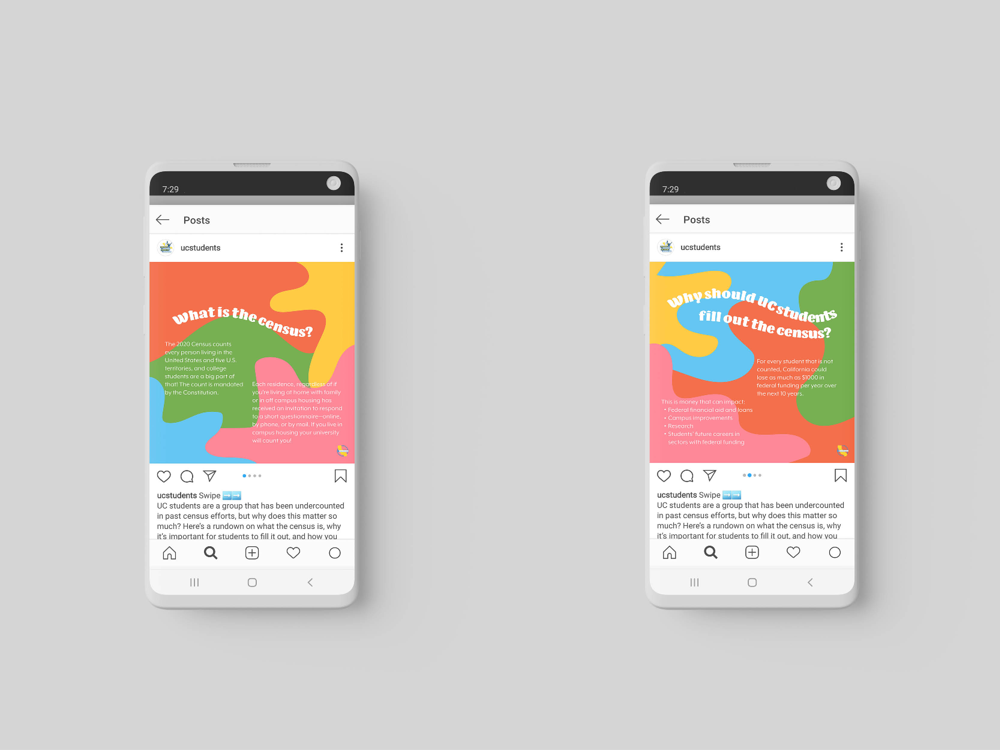
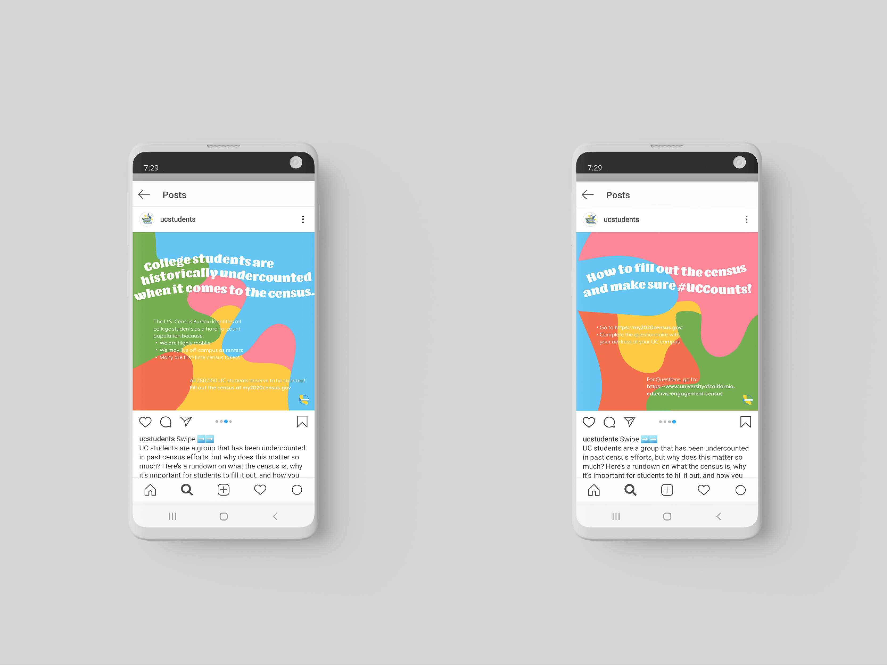

In Spring 2020, I served as a Graphic Design Intern for the University of California Student Association on the Census Outreact team, a team of students who created marketing a social media content to educate UC students on the importance of the census and encourage them to fill it out. I worked closely with the Marketing team to develop graphics for outreach, completing several projects over a few short weeks. I was given complete creative freedom with each graphic, allowing me to choose the aesthetic direction for each project and experiment outside my normal style.
With this Instagram post, I wanted to create something bright, colorful, and eye-catching in order to capture the interest of the viewer. I was inspired by this eye makeup I had seen on Pinterest to create utilize organic shapes, a fun type path, and bright colors.
 Instagram post answering questions about the 2020 Census

Moodboard


Flyer answering frequently asked questions about the 2020 Census
Facebook posts with gifs encouraging students to fill out the 2020 Census